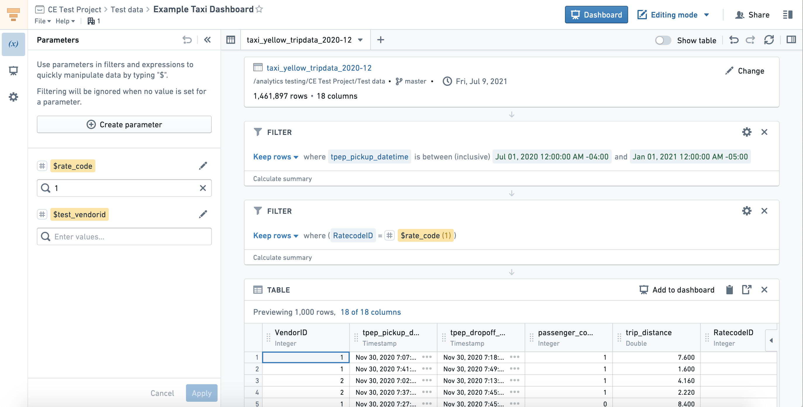

Contour
Contour provides a point-and-click user interface to perform data analysis on tables at scale. These analyses can be used to create interactive dashboards that allow others to explore and investigate the data in a guided, structured way.

Key features
Contour enables you to:
- Visualize, filter, and transform data without code.
- Organize complex analyses into analytical paths.
- Parameterize analyses to easily switch between different views of the data and results.
- Create interactive dashboards to share findings.
- Save analysis results as a new dataset for use in other Foundry tools.
- Leverage Contour's expression language for more advanced transformations and aggregations.
When to use Contour
Contour is a good fit for analytical use cases where:
- Some or all of the data you want to use is not mapped in the Ontology. In general, we recommend using the Ontology layer whenever possible, but there are some cases where this may not be appropriate (such as a one-time upload that will not be cleaned or reused).
- You need to operate on a very large dataset. For instance, performing joins on over 100,000 objects or aggregations on over 50,000 rows.
- You want to share your analysis results as a new dataset for use in other Foundry tools. Learn more about saving results as a dataset.
Learn more about other tools available for point-and-click analysis and when to use each.
:::callout{theme="success" title="Palantir Learning portal"}
For a deep dive into data analysis in Contour, visit learn.palantir.com â.
:::